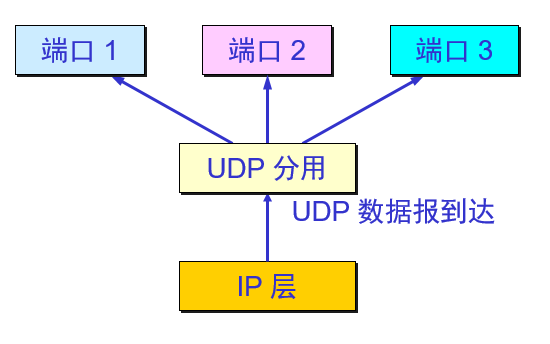
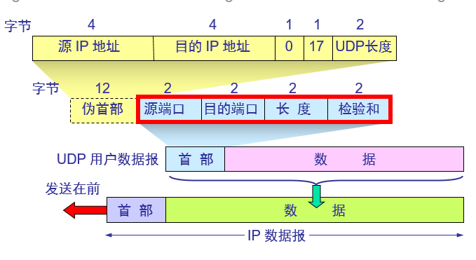
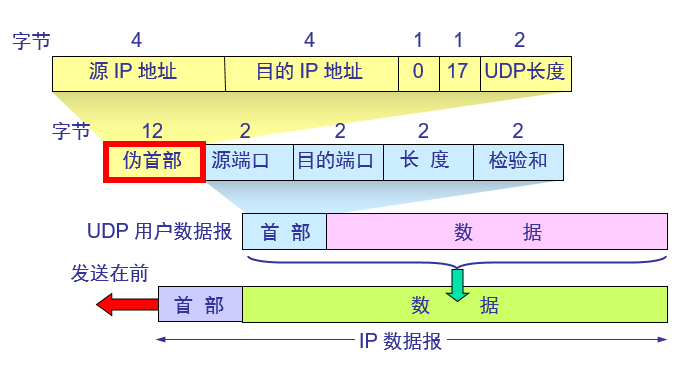

进程间通讯
从通信和信息处理的角度看，运输层向它上面的应用层提供通信服务，它属于面向通信部分的最高层，同时也是用户功能中的最低层；
当网络的边缘部分中的两个主机使用网络的核心部分的功能进行端到端的通信时，只有位于网络边缘部分的主机的协议栈才有运输层，而网络核心部分中的路由器在转发分组时都只用到下三层的功能。
运输层为相互通信的应用进程提供了逻辑通信
运输层和网络层的关系
网络层提供了不同主机之间的逻辑通讯，而运输层为不同主机上的进程之间提供了逻辑通讯(“逻辑通信”的意思是：运输层之间的通信好像是沿水平方向传送数据。但事实上这两个运输层之间并没有一条水平方向的物理连接。)；

IP为主机之间提供了逻辑通讯，IP的服务模型时尽力而为交付服务；它不做任何确保，尤其是不确保报文段的交付、不确保报文段按序交付，不确保报文段数据的完整性。
运输层的TCP和UDP最基本的责任是将两个端系统间IP的交付服务扩展为运行在端系统上的两个进程之间的交付服务。将主机间交付扩展到进程间交付被称为运输层的多路复用与多路分解。
运输层提供的服务
UDP：进程到进程的数据交付和差错检查是UDP提供的仅有的两种服务；
TCP：数据交付、差错检查、可靠数据传输、拥塞控制；
多路复用和多路分解
运输层的多路复用和多路分解，也就是将由网络层提供的主机到主机交付服务延伸到为运行在主机上的应用程序提供的进程到进程的交付服务；
一个进程有一个或多个套接字 ，它相当于从网络向进程传递数据和从进程向网络传递数据的门户。，因此在主机中运输层实际上并没有直接将数据交付给进程，而是将数据
给了一个中间的套接字。由于在任一时刻，在接受主机上可能有不止一个套接字，所以每个套接字都有唯一的标识符。标识符取决于它是UDP还是TCP套接字。
接收主机怎样将一个到达的运输层报文定向到适当的套接字？
每个运输层报文段中有几个字段，在接收端，运输层检查这些字段，标识出接收套接字，进而将报文段定向到该套接字。将运输层报文段中的数据交付到正确的套接字的工作称为多路分解。
在源主机从不同的套接字中收集数据块，并为每个数据块封装上首部信息（这将以后用于分解）从而生成报文段，然后将报文段传递到网络层，所有这些工作称为多路复用；
运输层多路复用与多路分解在主机中工作实现：
运输层多路复用要求:
1、套接字有唯一标识符；
2、每个报文段有特殊字段来指示该报文段所要交付的套接字；
这些特殊字段是源端口号字段和目的端口号字段；
在主机上的每个套接字能够分配一个端口号，当报文到达主机时，运输层检查报文段的目的端口号，并将其定向到响应的套接字。然后报文段中的数据通过套接字进入其所连接的进程。
UDP大体上是这样的，TCP中的多路复用与多路分解更为复杂。
无连接的多路复用和多路分解
一个UDP套接字是由一个二元组全面标识的，该二元组包含一个目的IP地址和一个目的端口号。因此，如果两个UDP报文段有不同的源IP地址或源端口号，但具有
相同的目的IP地址和目的端口号，那么这两个报文段将通过相同的目的套接字被定向到相同的目的进程。

面向连接的多路复用与多路分解
TCP套接字是由一个四元组（源IP地址，源端口号，目的IP地址，目的端口号）来标识的。因此，当一个TCP报文段从网络到达一个主机时，该主机使用全部4个值来
将报文段定向（分解）到相应的套接字。特别与UDP不同的是，两个具有不同源IP地址或源端口号的到达TCP报文段将被定向到两个不同的套接字，除非TCP报文段携带
了初始创建连接的请求。
无连接运输：UDP
UDP 在传送数据之前不需要先建立连接。对方的运输层在收到 UDP 报文后，不需要给出任何确认。虽然 UDP 不提供可靠交付，但在某些情况下 UDP 是一种最有效的工作方式。
UDP只是做了运输层协议能够做的最少工作。除了复用/分解功能及少量的差错检测外，它几乎没有对IP增加别的东西。
使用UDP的应用是可能现实可靠数据传输的，这可通过在应用程序自身中建立可靠传输机制来完成。
运输层的 UDP 用户数据报与网际层的IP数据报有很大区别。IP 数据报要经过互连网中许多路由器的存储转发，但 UDP 用户数据报是在运输层的端到端抽象的逻辑信道中传送的。
UDP 的主要特点
UDP 是无连接的，即发送数据之前不需要建立连接。
UDP 使用尽最大努力交付，即不保证可靠交付，同时也不使用拥塞控制。
UDP 是面向报文的。UDP 没有拥塞控制，很适合多媒体通信的要求。
UDP 支持一对一、一对多、多对一和多对多的交互通信。
UDP 的首部开销小，只有 8 个字节。
面向报文的 UDP
发送方 UDP 对应用程序交下来的报文，在添加首部后就向下交付 IP 层。UDP 对应用层交下来的报文，既不合并，也不拆分，而是保留这些报文的边界。
应用层交给 UDP 多长的报文，UDP 就照样发送，即一次发送一个报文。
接收方 UDP 对 IP 层交上来的 UDP 用户数据报，在去除首部后就原封不动地交付上层的应用进程，一次交付一个完整的报文。
应用程序必须选择合适大小的报文。

UDP 的首部格式

用户数据报 UDP 有两个字段：数据字段和首部字段。首部字段有 8 个字节，由 4 个字段组成，每个字段都是两个字节。

在计算检验和时，临时把“伪首部”和 UDP 用户数据报连接在一起。伪首部仅仅是为了计算检验和。
